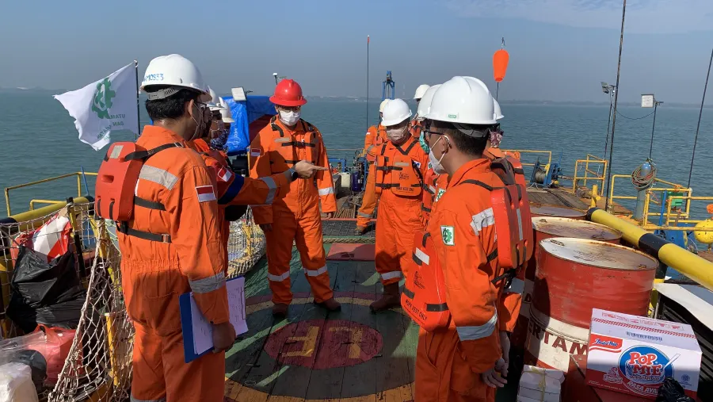
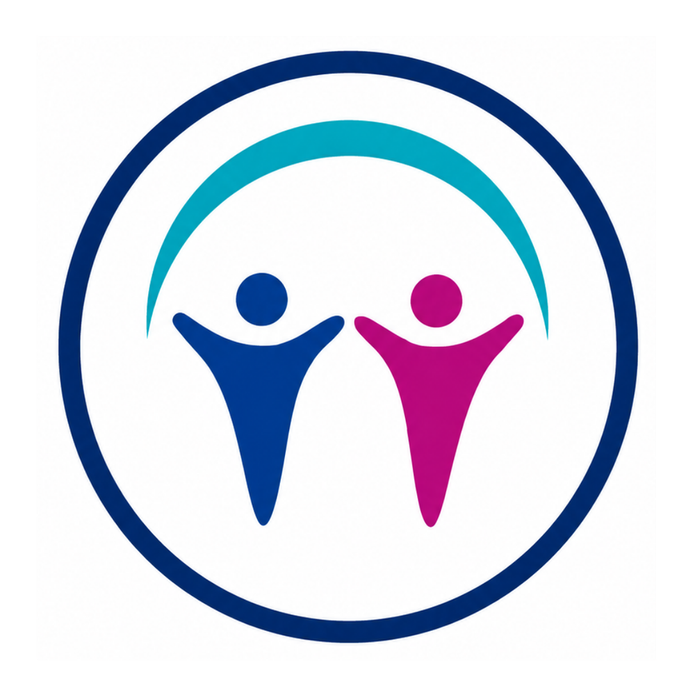
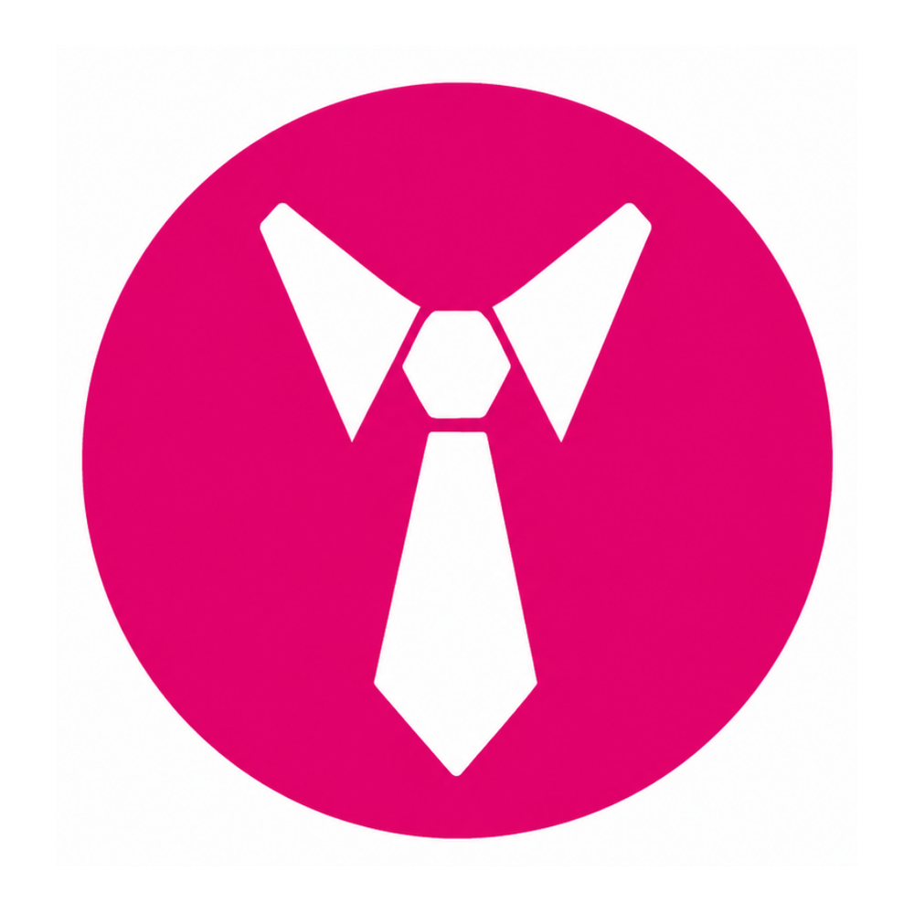
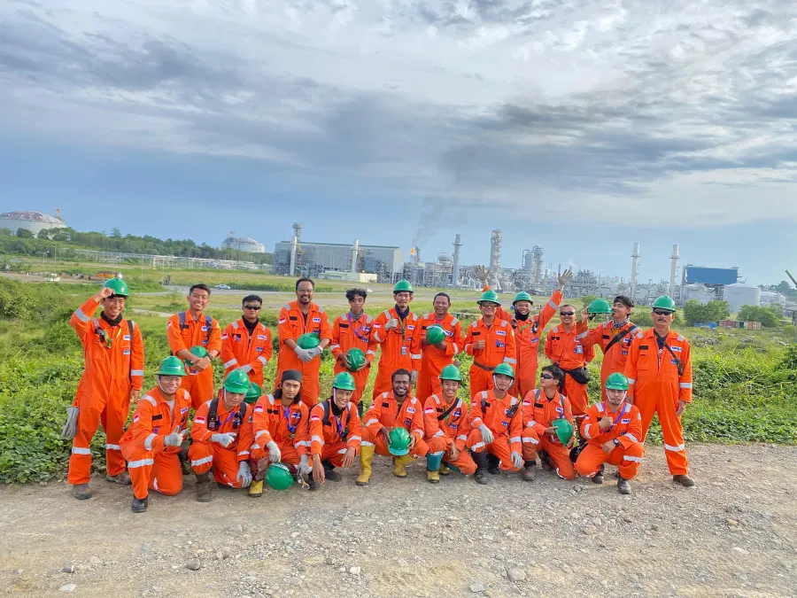
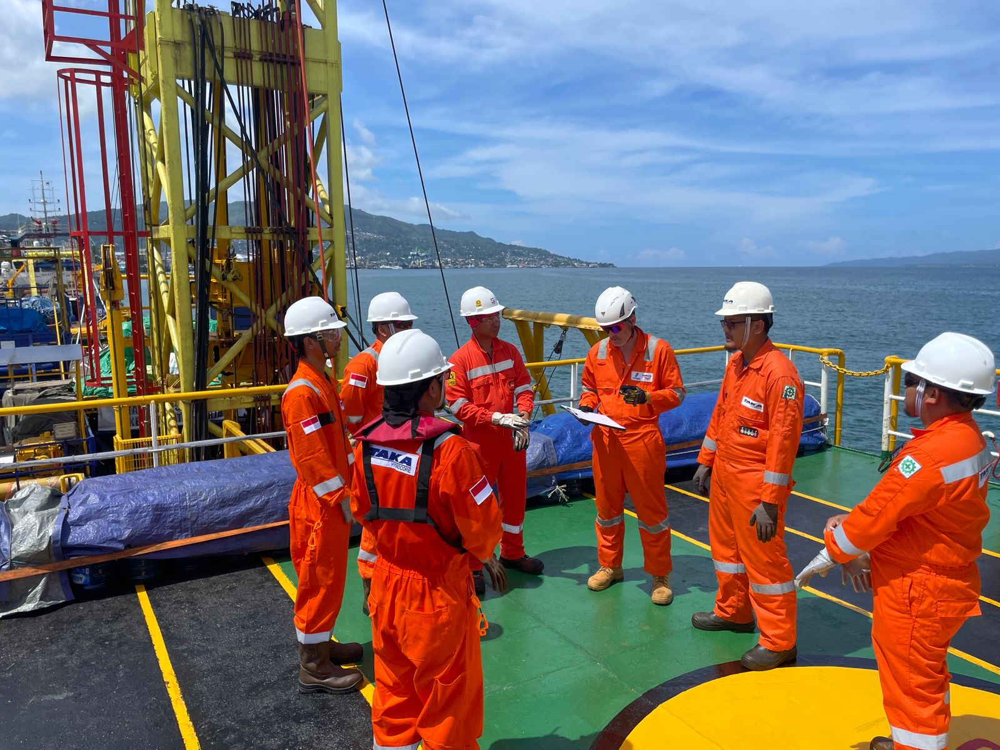

Proactive support and delivery that aims to exceed customer expectations.
Careers
Career at Taka Hydrocore.
Grow through real work.
Learn with teams that prepare field work, data, safety, and project support across marine and land operations.
01 / Life at Taka Hydrocore
People, sites, and preparation
Work here is not only about a job title. It is about how people prepare, communicate, and execute together.
Some teams work at site with vessels, rigs, survey equipment, and safety controls. Other teams keep planning, documents, logistics, finance, people, and client communication moving from the office.
View life at Taka Hydrocore →


02 / Core Values
SIGAP culture
Simple values that guide how Taka Hydrocore teams work in the office and at site.
What SIGAP means
SIGAP is the work culture used across Taka Hydrocore. It keeps the way people serve clients, make decisions, learn from work, respect others, and deliver assignments consistent across office and field activity.
How it is applied
The values are reflected in everyday habits: preparation before work, clear communication, responsible documentation, teamwork, and disciplined follow-through until the job is properly closed.
The five values
Each value gives the team a clear reference for behaviour, collaboration, and project execution.
Trustworthy, committed, responsible, and consistent in keeping our word.
Continual learning, adaptability, innovation, and better output from every assignment.

AwarenessRespect for diversity, protection of company reputation, and recognition for others.

ProfessionalismWork ethic compliance, doing our best, teamwork, and leading by example.
.jpeg)
SIGAP appreciation program
SIGAP Value of the Month recognises people who live the culture.
Beyond defining the values, Taka Hydrocore also gives monthly recognition to team members who put SIGAP into real work. The appreciation highlights dependable behaviour, service mindset, improvement, awareness, and professional conduct.
"This recognition reminds me to keep improving the way I work, support the team with a service mindset, and stay aware of the details that matter in every assignment."
February 2026 Winner
Muhammad Rendi Jaya
Recognised for Service Excellence, Grow, and Awareness.
03 / Team Stories
From people in the work
Different roles, one shared expectation: be prepared and reliable.
Field Operations
"The work teaches us to prepare clearly before every field activity. Good execution starts from discipline, communication, and teamwork."Arif Firmansyah Field Operations Supervisor

Survey & Data
"Data work is detailed, but that is what makes it valuable. Every check helps the project team make better technical decisions."Dina Prameswari Survey Data Analyst

QHSE
"Safety is built through habits. Briefing, checking, and reporting may look simple, but those routines protect everyone on site."Raka Nugroho QHSE Officer
04 / Job Fields
Career areas
Explore work areas connected to project delivery.
Geotechnical Operation
Drilling, CPT, sampling, coring, and field investigation support.
Geophysical
Survey acquisition, positioning, bathymetry, seismic, and data workflow.
Engineering
Drawing, inspection, technical review, and reporting preparation.
Facility
Workshop readiness, tools, maintenance, and equipment support.
Project Control & Commercial
Bid support, contract records, project administration, and client coordination.
QHSE
Quality, safety, health, environment, compliance, and site readiness.
Finance, Accounting & Procurement
Financial records, payment tracking, purchasing, and vendor coordination.
HR, GA & Marketing Support
People operations, office support, logistics, documentation, and company material.
05 / Internship

For students
Taka Hydrocore opens internship opportunities for students who want practical exposure to project support work.
Internship placement may support technical, QHSE, commercial, finance, HR, general affairs, or field administration work depending on department needs.
View Internship Detail